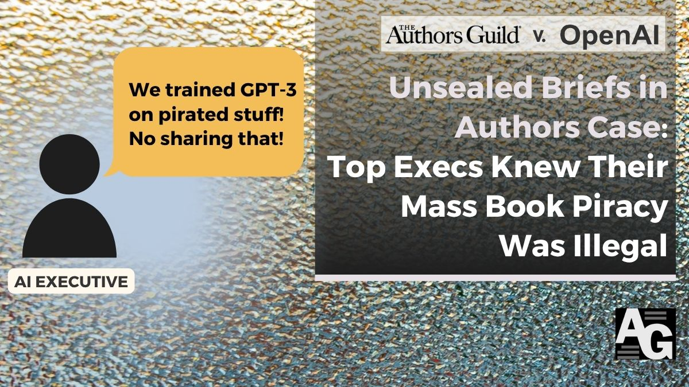
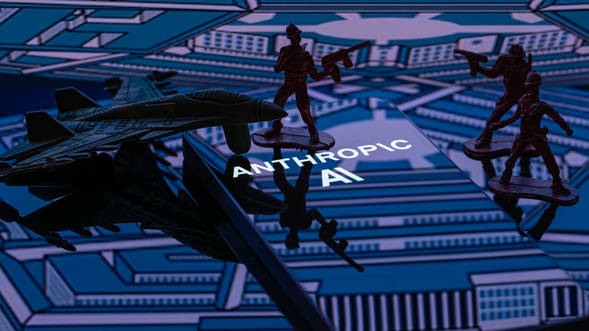

01 프론티어 & 사업 동향 이번 호 머리기사
Anthropic, Opus 5.5 가격 40% 낮췄다
Anthropic이 새 상위 모델 Claude Opus 5.5를 내놨다. 복잡한 코딩과 지식 업무 성능을 앞세우면서도, 일반 작업 비용은 Opus 5보다 40% 낮췄고 출력 속도는 30% 이상 높였다고 밝혔다.

Weekly AI Brief
이번 주에는 프론티어 모델 가격과 속도가 다시 조정됐다. Anthropic은 Opus 5.5 가격을 40% 낮췄고, Claude Sonnet 5.5도 더 빠르고 토큰을 덜 쓰게 바꿨다. OpenAI는 GPT-6 Sol·Luna를 내놓으며 일상 업무를 겨냥했지만, 일부 연구와 보안 이슈는 정확도·통제와 비용 절감이 함께 움직이지는 않는다는 점을 드러냈다. 외부에서는 소송 공개와 국방 공급망 리스크 유지가 이어졌고, 오픈 영역에서는 Sarvam AI의 22개 언어 음성 인식처럼 지역 언어 지원이 넓어졌다. 이번 주에는 성능 경쟁보다 가격, 속도, 안정성, 통제의 균형이 어디로 옮겨가는지 살펴봐야 한다.

Editor's Pick
01 프론티어 & 사업 동향 이번 호 머리기사
Anthropic이 새 상위 모델 Claude Opus 5.5를 내놨다. 복잡한 코딩과 지식 업무 성능을 앞세우면서도, 일반 작업 비용은 Opus 5보다 40% 낮췄고 출력 속도는 30% 이상 높였다고 밝혔다.
02 프론티어 & 사업 동향
“OpenAI는 GPT-6 Sol과 Luna를 서로 다른 성능·비용 균형을 가진 일상 업무용 모델로 소개했다.”
03 프론티어 & 사업 동향
“Sonnet 5.5는 Sonnet 5보다 30% 이상 빠르고, 작업당 비용은 최대 30% 낮다.”
대형 연구소의 모델 공개·프리뷰, 규제/정책, 파트너십 등 산업이 움직인 사건입니다.
01 Anthropic 게시일 2026.09.22
Anthropic이 새 상위 모델 Claude Opus 5.
“Opus 5.5는 Opus 5보다 일반 작업 비용이 40% 낮고 출력 속도는 30% 이상 빠르다.”
0102 OpenAI 게시일 2026.09.22
OpenAI가 GPT-6 Sol과 GPT-6 Luna를 공개했다.
“OpenAI는 GPT-6 Sol과 Luna를 서로 다른 성능·비용 균형을 가진 일상 업무용 모델로 소개했다.”
03 Anthropic 게시일 2026.09.28
Anthropic이 Claude Sonnet 5.
“Sonnet 5.5는 Sonnet 5보다 30% 이상 빠르고, 작업당 비용은 최대 30% 낮다.”
 03
0304 authorsguild.org 게시일 2026.09.27
미국 작가 단체가 OpenAI와 Microsoft를 상대로 한 저작권 소송의 비공개 서류 일부를 공개했다.
“이번에 공개된 서류는 OpenAI와 Microsoft 임직원이 저작권 침해 위험을 알고도 책 데이터 사용을 밀어붙였다는 주장을 담고 있다.”

0405 CNBC 게시일 2026.09.25
미국 항소법원이 국방부의 Anthropic 공급망 리스크 지정을 2대 1로 유지했다.
“이 지정은 미군의 Anthropic 모델 사용을 막고, 국방 계약사도 해당 업무에 쓰지 못하게 한다.”

05오픈웨이트 모델과 GitHub/Hugging Face 생태계에서 주목할 프로젝트입니다.
06 MarkTechPost 게시일 2026.09.26
Sarvam AI가 음성을 글로 바꾸는 Saaras V4를 공개했다.
“Saaras V4는 인도 헌법상 22개 언어와 영어를 한 모델에서 받아쓰는 음성 인식 모델이다.”
 06
06논문·벤치마크·기법 연구 중 실무 관점에서 볼 만한 결과입니다.
07 cryptocellar.org 게시일 2026.09.22
GPT-6 Astra가 2005년부터 풀리지 않던 독일군 에니그마 암호문 MVUEH를 해독했다고 Crypto Cellar Research가 검증했다.
“GPT-6 Astra는 2005년부터 풀리지 않던 에니그마 암호문 MVUEH를 이틀 만에 해독했다.”
 07
0708 The New Stack 게시일 2026.09.28
개발자 작업 3종을 5번씩 반복한 비교에서 Claude Opus 5.
“Opus 5.5는 15회 모두 정답이었고, GPT-6 Sol은 비용이 약 6분의 1이었지만 15회 중 12회만 완벽했다.”
 08
08개발 도구, 인프라, 보안 이슈 등 바로 써먹거나 조심해야 할 소식입니다.
09 The New Stack 게시일 2026.09.28
OpenAI가 프롬프트 인젝션이 컴퓨터 웜처럼 스스로 퍼질 수 있다고 밝혔다.
“악성 지시가 이메일, 파일, 코드 주석을 타고 퍼지며 에이전트가 승인받지 않은 행동을 하게 만들 수 있다.”
 09
0910 Claude Blog 게시일 2026.09.28
Anthropic이 NVIDIA와 협력해 에이전트 보안 통제 기능을 묶었다.
“고객은 Managed Agents와 OpenShell을 함께 써서 에이전트가 무엇을 할 수 있는지 제한하고, 실제로 한 행동을 검토할 수 있다.”
 10
10